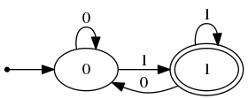
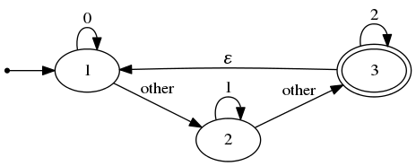
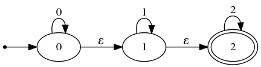
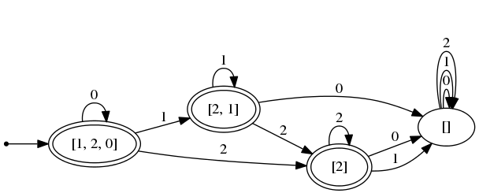
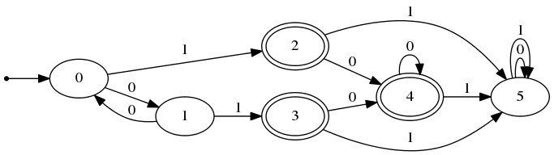
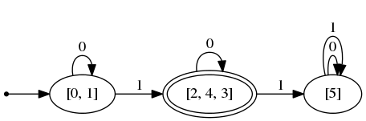

オートマトン in OCaml
前にpythonでやったことをOCamlでやったのでまとめた。
このページの実行例はこのリポジトリのルートで jbuilder utop src で起動するutopで実行した。
作成・実行
作って…
# let dfa =
DFA.cons
["0"; "1"] (* アルファベット *)
[(0, "0", 0); (* 遷移関数 *)
(0, "1", 1); (* (q, c, q') は「状態qでcを読むとq'に遷移する」を意味する *)
(1, "0", 0);
(1, "1", 1)]
0 (* 初期状態 *)
[1];; (* 受理状態 *)
val dfa : int DFA.t = <abstr>
走らせる。
# DFA.run dfa "0001";;
- : bool = true
# DFA.run dfa "0110";;
- : bool = false
# DFA.run dfa "";;
- : bool = false
NFAでは空文字列Emptyと「その他全て」を意味するAnyOtherが使える
# let nfa =
let a, b, c, d = 1, 2, 3, 4 in
NFA.cons ["0"; "1"; "2"]
[(a, Char "0", [a]); (* 遷移先は状態ではなく状態の集合になる *)
(a, AnyOther, [b]);
(b, Char "1", [b]);
(b, AnyOther, [c]);
(c, Char "2", [c]);
(c, Empty, [a;b])]
[a] (* 初期状態も状態の集合*)
[c];;
val nfa : int NFA.t = <abstr>
# NFA.run nfa "";;
- : bool = false
# NFA.run nfa "00";;
- : bool = false
# NFA.run nfa "10";;
- : bool = true
# NFA.run maton "21012";;
- : bool = true
# NFA.run nfa "011010001";;
- : bool = false
遷移図の出力
Dot言語のソースコードを出力する関数がある。
# DFA.print_dfa dfa string_of_int;;
digraph finite_state_machine {
rankdir=LR
node [shape = point] init
node [shape = ellipse, peripheries=2]
"1"
node [shape = ellipse, peripheries=1]
init -> "0"
node [shape = ellipse, peripheries=1]
"0" -> "0" [label = "0"]
"0" -> "1" [label = "1"]
"1" -> "0" [label = "0"]
"1" -> "1" [label = "1"]
}
これをgraphvizでコンパイルすると、以下の画像が得られる。

NFAでも同様。
# print_nfa nfa string_of_int;;
digraph finite_state_machine {
rankdir=LR
node [shape = point] init
node [shape = ellipse, peripheries=2]
"3"
node [shape = ellipse, peripheries=1];
init -> "1"
node [shape = ellipse, peripheries=1]
"1" -> "1" [label = "0"]
"1" -> "2" [label = "other"]
"2" -> "2" [label = "1"]
"2" -> "3" [label = "other"]
"3" -> "3" [label = "2"]
"3" -> "1" [label = "ε"]
"3" -> "2" [label = "ε"]
}

NFAのDFAへの変換
与えられたNFAを、認識する言語が同じDFAに変換するアルゴリズムを実装した。
これだけ読んで分かるかどうかは微妙だが、ソースコードを張る。
let to_dfa = fun maton ->
let init = (saturate maton maton.initial) in
let finals =
if anything_in_common init maton.finals
then ref [init]
else ref [] in
let trans = ref [] in
let rec loop searched to_search =
match to_search with
| [] -> ()
| state::tl ->
let nexts_triplet =
image (fun c -> state, c, transit maton state c) maton.alphabet in
let nexts = map (fun (_, _, x) -> x) nexts_triplet in
trans := nexts_triplet @ !trans;
finals := nexts
|> filter (anything_in_common maton.finals)
|> union !finals;
loop (set_add searched state) (union tl (diff nexts (state::searched)))
in
let _ = loop [] [init] in
DFA.cons maton.alphabet !trans init !finals
次のように使う。
# let nfa =
let a, b, c = 0, 1, 2 in
NFA.cons ["0"; "1"; "2"]
[(a, Char "0", [a]);
(a, Empty, [b]);
(b, Char "1", [b]);
(b, Empty, [c]);
(c, Char "2", [c])]
[a] [c] ;;
val nfa : int NFA.t = <abstr>
# let dfa = (NFA.to_dfa nfa);;
val dfa : int list DFA.t = <abstr>
変換されたDFAの状態は元のNFAの状態の集合なので、
int NFA.t を変換した dfa の型が int list DFA.t になっている。
この nfa , dfa を画像にすると、変換がどう行われたのかが分かる。
# NFA.print_nfa nfa string_of_int;;
(* 出力される文字列をgraphvizで画像にしたものを張った。以下同じ。 *)

# DFA.print_dfa dfa (ListExt.string_of_list string_of_int)

DFAの最小化
Myhill–Nerodeの関係を使ったDFAの最小化アルゴリズムも実装した。
コードはかなり長く、以下のようになる。
let minimize maton =
(* helper functions *)
let transitable_into marked (p, q) =
exists
(fun c ->
let p', q' = transit maton p c, transit maton q c in
mem (p', q') marked || mem (q', p') marked)
maton.alphabet in
let mark_initial_cond (p, q) =
(mem p maton.finals && not (mem q maton.finals)) ||
(not (mem p maton.finals) && mem q maton.finals) in
let transitions_from s new_states =
let origin = find (mem s) new_states
and next c = find (mem (transit maton s c)) new_states in
(map (fun c -> origin, c, next c) maton.alphabet) in
let states = collect_states maton in
let rec loop (marked, unmarked) =
let to_add = filter (transitable_into marked) unmarked in
if subset to_add marked then marked, unmarked
else loop ((union marked to_add), (diff unmarked to_add)) in
let connected_component udgraph v =
let rec loop acc = function
| [] -> acc
| (x, y) :: tl when x = v || y = v -> loop (union acc [x; y]) tl
| _ :: tl -> loop acc tl in
loop [v] udgraph in
(* main procedure *)
(* (p, q) ∈ marked <-> p and q are distinguishable *)
let init_marked, init_unmarked =
partition mark_initial_cond (original_pairs states) in
(* saturate marked and unmarked *)
(* "marked ∩ unmarked = ∅" stays true after loop *)
let marked, unmarked = loop (init_marked, init_unmarked) in
(* calculate new states from marked and unmarked *)
let new_states =
fold_left_ignore
(fun acc s -> exists (fun set -> mem s set) acc)
(* largest undistinguishable set which contains s *)
(fun acc s -> (connected_component unmarked s) :: acc)
[] states in
(* also calculate new transition from new_states *)
let new_trans =
fold_left_ignore
(fun acc s -> exists (fun (set, _, _) -> mem s set) acc)
(fun acc s -> (transitions_from s new_states) @ acc)
[] states in
cons
maton.alphabet
new_trans
(* note : exactly one element of new_states contains maton.inits *)
(find (mem maton.inits) new_states)
(filter (anything_in_common maton.finals) new_states)
使用例:
# let maton = DFA.cons ["0"; "1"]
[(0, "0", 1);
(0, "1", 2);
(1, "0", 0);
(1, "1", 3);
(2, "0", 4);
(2, "1", 5);
(3, "0", 4);
(3, "1", 5);
(4, "0", 4);
(4, "1", 5);
(5, "0", 5);
(5, "1", 5)]
0 [2;3;4] ;;
val maton : int DFA.t = <abstr>
# DFA.print_dfa maton string_of_int;;

これを最小化すると、
# let minimized = DFA.minimize maton;;
val minimized : int list DFA.t = <abstr>
# DFA.print_dfa minimized (MyExt.ListExt.string_of_list string_of_int);;

となる。
最小化されたDFAを見ると元のDFAのどの状態が同一視されているのかが分かる。